Designing and Fabricating a Desktop Lathe
MIT 2.720 | Spring 2022
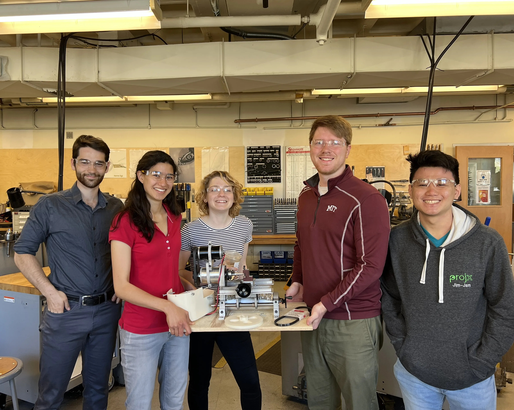
Project: Build a desktop lathe that can meet repeatability, accuracy, and functional requirements — including: cut steel to an accuracy of 0.001" and survive our Professor's "Death Test"
Course: MIT 2.720 (Elements of Mechanical Design). An advanced study of modeling, design, and integration, along with best practices for use of machine elements like bearings, bolts, belts, flexures, and gears.
Collaborators: Melissa Brei, Jacob Easley, Collin Goldbach, Violet Killy, Jimmy Tran, Lara Zlokapa
Overview
At the start of this project, my team and I were presented with an example CAD assembly and a box of supplied parts, with the following catch: scattered throughout the design were a number of errors/traps that could only be amended with thorough engineering analysis. We set out to analayze, redesign, build, and evaluate a fully functional desktop lathe in one semester. To keep us on track and guide our decision-making, we first developed an extensive Gantt chart and a series of functional requirements, including intended load capacities, repeatability and accuracy metrics, and speed, power, and torque requirements.
Functional Requirements
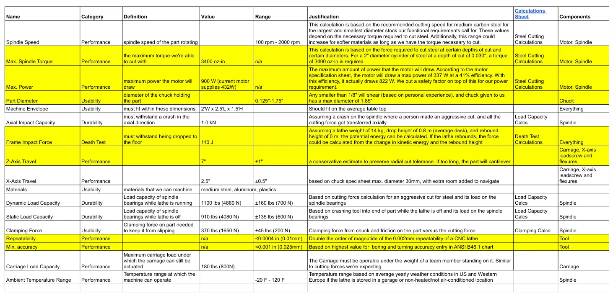
Key Contributions
- Budget/BOM management and ordering of all parts
- Collaboration on spindle subassembly design and analysis
- Manufacturing of cross-slide x-axis flexure
- Frequency analysis of cross-slide subassembly
- Characterization of error motions using Coordinate Measuring Machine (CMM)
Spindle
The spindle subassembly was made up of a shaft, housing, and two taper bearings — one press fit into the housing and the other axially free and preloaded by a washer. We had to correctly size the press fit bearing, determine an appropriate preload for the free one, and design the shaft to minimize deflection at expected cutting loads.
Spindle Analysis Objectives
- Stiffness (bearing spacing, beam bending)
- Bearing Preload
- Thermal Analysis
- Lifetime and Fatigue
- Stress Analysis
- Functional Requirements
Spindle CAD assembly
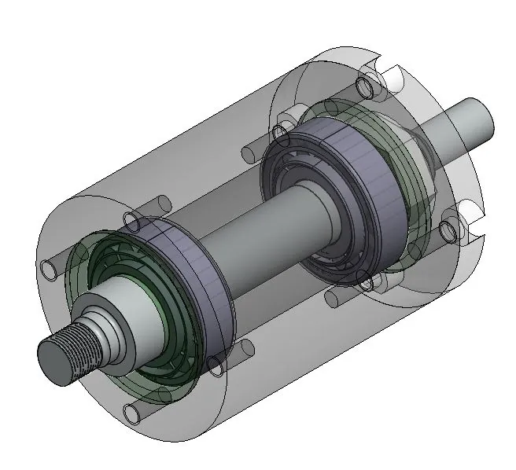
Completed spindle
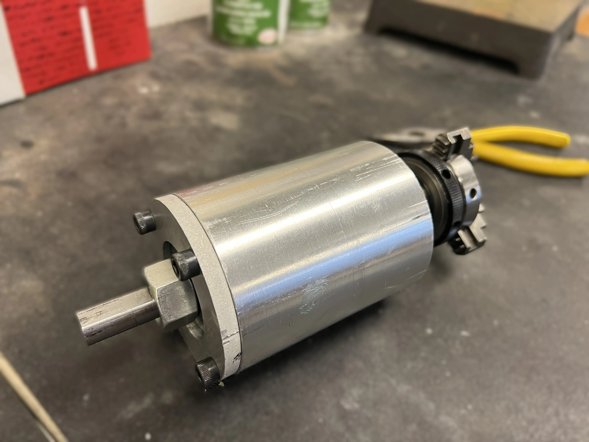
Spindle shaft free body diagram:
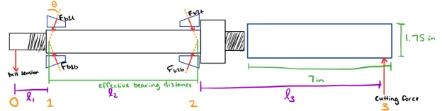
Spindle shaft under axial load modeled as springs in series:
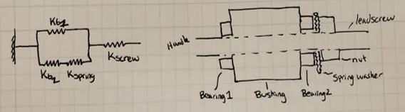
MATLAB analysis of bearing reactions forces and bending given a cutting load:
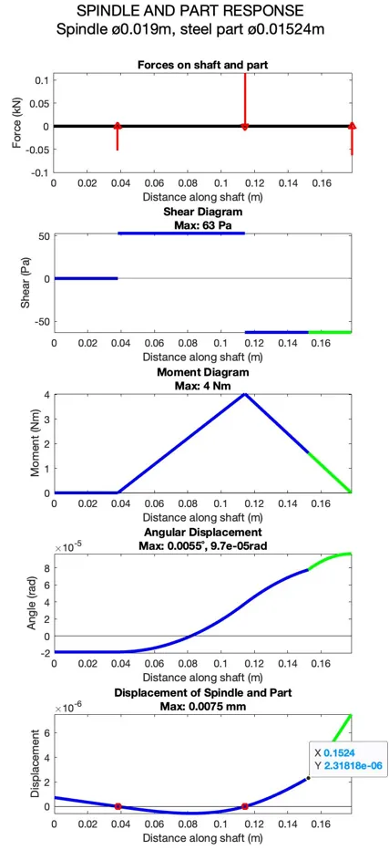
Cross-Slide
The cross-slide subassembly served as the lathe's x-axis and was essentially a large flexure which we cut on a waterjet, controlled by turning a lead screw
Key Considerations
- Stiffness (in each axis)
- Waterjet Tolerances
- Range of travel
- Lifetime and fatigue
- Resonant frequencies
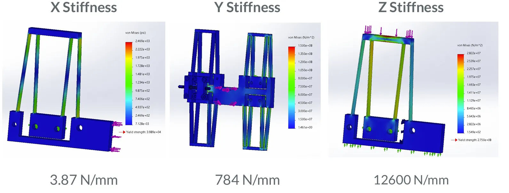
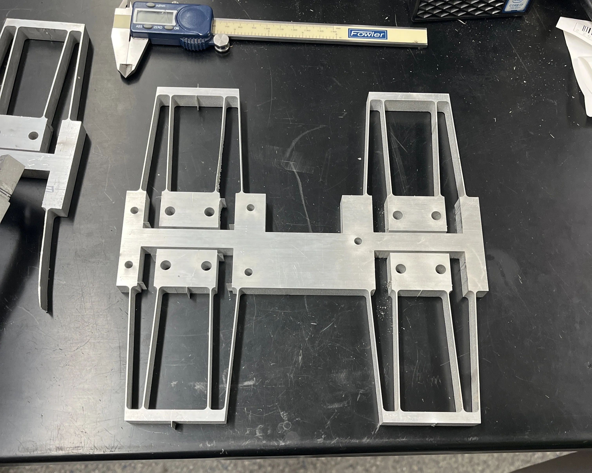
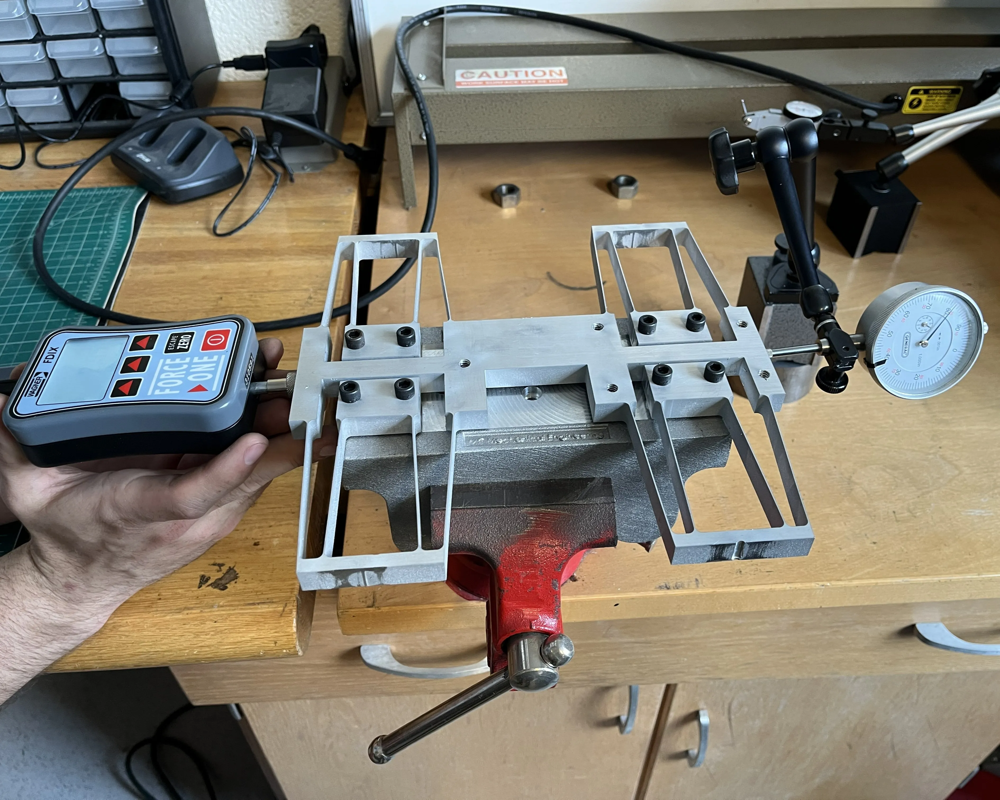
We tested factors like flexure stiffness and lead screw accuracy through a series of experiments using force gauge and dial indicators
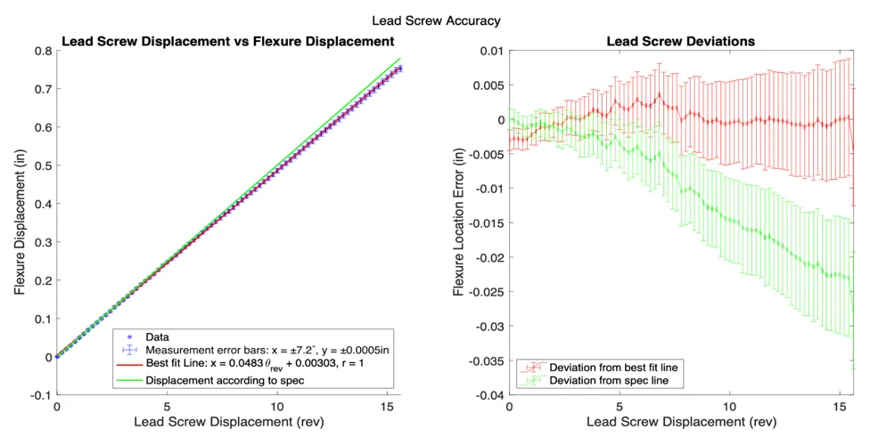
With normal operating speeds expected up to 200RPM, we determined that normal modes should be above 33Hz to minimize vibration. To analyze frequency, we excited the cross slide assembly with a rubber mallet. I analyzed the resulting audio with Audacity and MATLAB, and found through PSD analysis and found that the peaks were around 900Hz and in the high 4000s. Less than one percent of the signal strength was below 300Hz, meeting our design requirement.
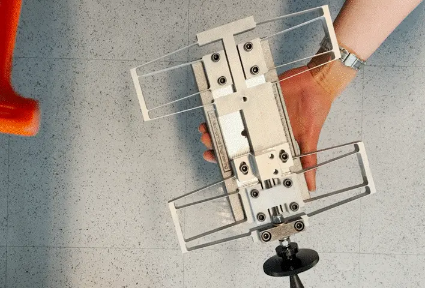
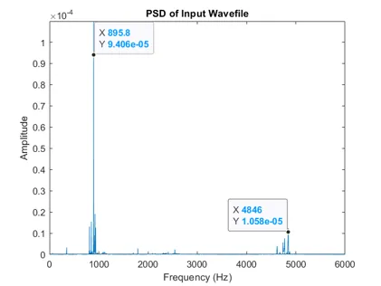
Final Assembly

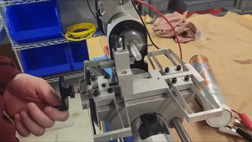